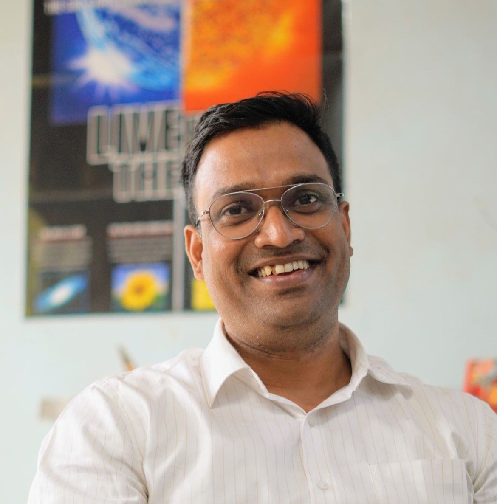

<<<<<<< HEAD Prof. (Dr.) Anil Narayan Raghav is a distinguished space scientist, innovator, and mentor with more than sixteen years of research and teaching experience in space physics. He currently serves as an Associate Professor in the Department of Physics at the University of Mumbai, where he has successfully guided numerous M.Sc. and Ph.D. scholars, many of whom are now making significant contributions to the global space science community.
He is also serving as Co-Leader for SCOSTEP’s (Scientific Committee on Solar-Terrestrial Physics) next five-year scientific program (2026–2030), titled COURSE: Cross-scale cOUpling pRocesses in the Solar-tErrestrial system, organized under the International Science Council (ISC). In this role, he contributes to advancing global scientific collaborations and pushing the frontiers of space research.
As the Founder and Director of SpaceProbe Pvt. Ltd., Dr. Raghav is spearheading initiatives that integrate cutting-edge space research, technology development, and public engagement. Through SpaceProbe, he is deeply committed to popularizing science and nurturing a strong scientific temperament in society.
His vision is to harness his expertise in space weather monitoring and solar storm prediction to develop early alert systems that protect and empower communities. He is equally passionate about the use of satellite data, GIS, and remote sensing technologies to deliver solutions with direct societal impact.
At the core of SpaceProbe’s mission lies Dr. Raghav’s ambition to pioneer modern space technologies for future missions and to help transform the space industry, ushering in a new era of innovation as transformative as the Industrial Revolution in human history. ======= Prof. (Dr.) Anil Narayan Raghav is a distinguished space scientist, innovator, and mentor with over 16 years of research and teaching experience in space physics. He currently serves as an Associate Professor in the Department of Physics at the University of Mumbai, where he has guided several M.Sc. and Ph.D. scholars, many of whom are now pursuing successful careers in space science worldwide.
As the Founder and Director of SpaceProbe Pvt. Ltd., Dr. Raghav is spearheading initiatives that integrate cutting-edge space research, technology development, and public engagement. His vision is to make space weather forecasting, satellite data applications, and astronomy outreach more accessible to industries, academic institutions, and the public. >>>>>>> 6987e0c34f4854c6c83258d2de856f10f08becd3
Under his leadership, SpaceProbe Pvt. Ltd. is building an ecosystem that connects advanced research with societal benefits through:
His mission is to bridge the gap between space science and society by fostering innovation, inspiring future generations of scientists, and supporting industries and institutions impacted by space weather and space technologies.
>>>>>>> 6987e0c34f4854c6c83258d2de856f10f08becd3